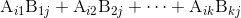
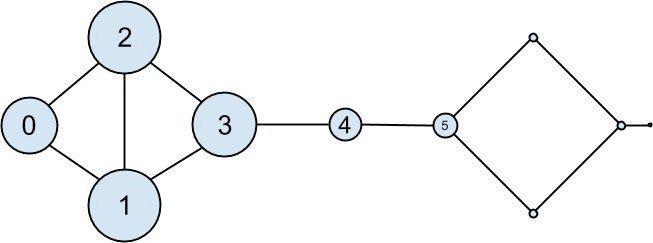

具体技术细节这里就不多说了，大家只要知道任何非零的邻接矩阵必然有一个所有的值皆非负的特征向量就行了。幸运的是，我们只要借助于 find_eigenvector 函数就能够找到这种 adjacency_matrix 。
具体技术细节这里就不多说了，大家只要知道任何非零的邻接矩阵必然有一个所有的值皆非负的特征向量就行了。幸运的是，我们只要借助于 find_eigenvector 函数就能够找到这种 adjacency_matrix 。21.2 特征向量中心度
要想介绍特征向量中心度，我们就不得不讨论特征向量，而要想讨论特征向量，我们就必须介绍矩阵乘法。
21.2.1 矩阵乘法
假设 A 是一个 n 1 ×k 1 矩阵，B 是一个 n 2 ×k 2 矩阵，并且 k 1 = n 2 ，那么这两个矩阵的乘积 AB 则是一个 n 1 ×k 2 矩阵，其中第 (i,j) 项为：

下面，我们仅计算矩阵 A 的第 i 行（可以视为一个向量）与矩阵 B 的第 j 列（也可以视为 一个向量）的点积，具体代码如下所示：
def matrix_product_entry(A, B, i, j):
return dot(get_row(A, i), get_column(B, j))
之后，我们就可以通过下列代码实现矩阵的乘法运算了：
def matrix_multiply(A, B):
n1, k1 = shape(A)
n2, k2 = shape(B)
if k1 != n2:
raise ArithmeticError("incompatible shapes!")
return make_matrix(n1, k2, partial(matrix_product_entry, A, B))
请注意，如果 A 是一个 n ×k 矩阵，B 是一个 k ×1 矩阵，那么 AB 则为 n ×1 矩阵。如果我们将一个向量看作是一维矩阵，就可以把 A 看作是将 k 维向量映射为 n 维向量的一个函数，实际上这个函数就是矩阵乘法。
之前，我们将向量简单地表示为列表，实际上两者之间是不能完全划等号的：
v = [1, 2, 3]
v_as_matrix = [[1],
[2],
[3]]
因此，我们需要定义相应的辅助函数，以便实现两种表示形式之间的转换：
def vector_as_matrix(v):
"""returns the vector v (represented as a list) as a n x 1 matrix"""
return [[v_i] for v_i in v]
def vector_from_matrix(v_as_matrix):
"""returns the n x 1 matrix as a list of values"""
return [row[0] for row in v_as_matrix]
如此一来，我们就可以利用 matrix_multiply 来定义矩阵运算了：
def matrix_operate(A, v):
v_as_matrix = vector_as_matrix(v)
product = matrix_multiply(A, v_as_matrix)
return vector_from_matrix(product)
当 A 是一个方阵 时，此操作会将 n 维向量映射为另一个 n 维向量。对于某矩阵 A 和向量 v ，对向量 v 进行 A 变换有时候会等效于用一个标量来乘向量 v ，即所得到的向量与 v 同向。当发生这种情况（且 v 不是零向量）时，我们称 v 为 A 的特征向量 。同时，我们称这个乘数为特征值 （eigenvalue）。
确定矩阵 A 的特征向量的一种可行方法是取一个随机向量 v ，然后利用 matrix_operate 对其进行调整，从而得到一个长度为 1 的向量，重复该过程直到收敛为止：
def find_eigenvector(A, tolerance=0.00001):
guess = [random.random() for __ in A]
while True:
result = matrix_operate(A, guess)
length = magnitude(result)
next_guess = scalar_multiply(1/length, result)
if distance(guess, next_guess) < tolerance:
return next_guess, length # eigenvector, eigenvalue
guess = next_guess
通过这种构造方法返回的向量 guess 将具备这样的特点：当你对它应用 matrix_operate 函数并将其长度缩为 1 的时候，得到的向量与其自身极为接近。这就意味着它是一个特征向量。
请注意，并不是所有的实数矩阵都具有特征向量和特征值。例如，请看下列矩阵：
rotate = [[ 0, 1],
[-1, 0]]
上述代码的作用是按照顺时针方向将向量旋转 90 度，这意味着，对于这个矩阵来说，只有一个向量能够映射到自身的数乘上面，这个向量就是零向量。如果你执行 find_eigenvector(rotate) ，它会永远运行下去。即使是具备特征向量的矩阵，有时候也会陷入这种死循环。请看下面的矩阵：
flip = [[0, 1],
[1, 0]]
对于任意向量 [x, y] ，这个矩阵都会将其映射为 [y, x] 。这就意味着，[1, 1] 是一个特征值为 1 的特征向量。但是，如果你从一个 x 和 y 并不相等的随机向量着手的话，那么，find_eigenvector 将会来回交换这两个坐标值，并且永远也不会停下来。（Not-from-scratch 是一个类似于 NumPy 的 Python 库，由于它采用了不同的处理方法，因此能够有效处理这种情形。）尽管如此，只要 find_eigenvector 能返回一个结果，那么这个结果肯定是一个特征向量。
21.2.2 中心度
该如何利用特征向量来帮助我们理解 DataSciencester 网络呢 ?
首先，我们需要用 adjacency_matrix 来表示网络中的连接，其中第 (i,j) 个元素的值要么为 1（如果用户 i 和用户 j 是朋友的话），要么为 0（如果他们不是朋友的话）：
def entry_fn(i, j):
return 1 if (i, j) in friendships or (j, i) in friendships else 0
n = len(users)
adjacency_matrix = make_matrix(n, n, entry_fn)
对于每个用户来说，他的特征向量中心度就是在 find_eigenvector 返回的本征向量中的该用户对应的那个元素（见图 21-4）：
eigenvector_centralities, _ = find_eigenvector(adjacency_matrix)

图 21-4：根据特征向量中心度绘制的 DataSciencester 网络
特征向量中心度较高的用户，不仅会拥有较多的连接，而且还倾向于连接到具有较高中心度的那些人。
就上图而言，用户 1 和用户 2 具有最高的中心度，这是由于他们两个都有三条连接是通向具有高中心度的对方的。如果我们将其移除，他们的中心度就会直线下降。
在这种小型的网络上中，特征向量中心度的行为会有些怪异。当你尝试增减连接的时候，你会发现，只要对网络进行稍微的修改，中心度的数值就会发生戏剧性的变化。对于比较大型的网络来说，这种情况就不太明显。
我们仍然没有介绍为什么特征向量能够较好地度量中心度。这是因为特征向量意味着，如果你计算：
matrix_operate(adjacency_matrix, eigenvector_centralities)
其结果就等于用一个标量去乘以 eigenvector_centralities 。
如果你了解矩阵乘法的运算机制，就会知道 matrix_operate 求出的向量的第 i 个元素为：
dot(get_row(adjacency_matrix, i), eigenvector_centralities)
这实际上就是对连接到用户 i 的各个用户的特征向量中心度进行求和。
换句话说，特征向量中心度就是一些数值，即每个用户对应一个数值，而每个用户的值就是他的相邻值之和的固定倍数。在这种情况下，中心度就意味着要跟处于中心地位的人交朋友。你结交的人的中心度越高，你的中心度也就越高。当然，这明显是一个循环定义，而特征向量就是打破这个循环的突破口。
对此还有另外一种理解方法，那就是考察 find_eigenvector 函数的处理方式。它首先给每个节点随机指定一个中心度，然后重复以下两个步骤，直到这个过程收敛为止。
1. 赋予每个节点一个新的中心度分数，该分数等于该节点相邻节点的（原）中心度分数之和。
2. 调整中心度向量，直到其大小变成 1 为止。尽管这种做法包含的数学原理有点让人摸不着头脑，但是就计算本身而言，还是相当简单的（这一点与中介中心度不同），同时，它也非常适用于巨型网络图。